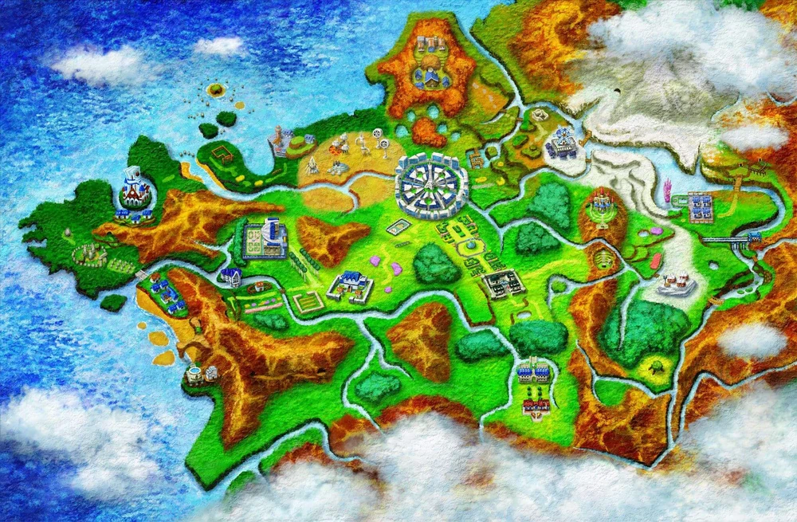
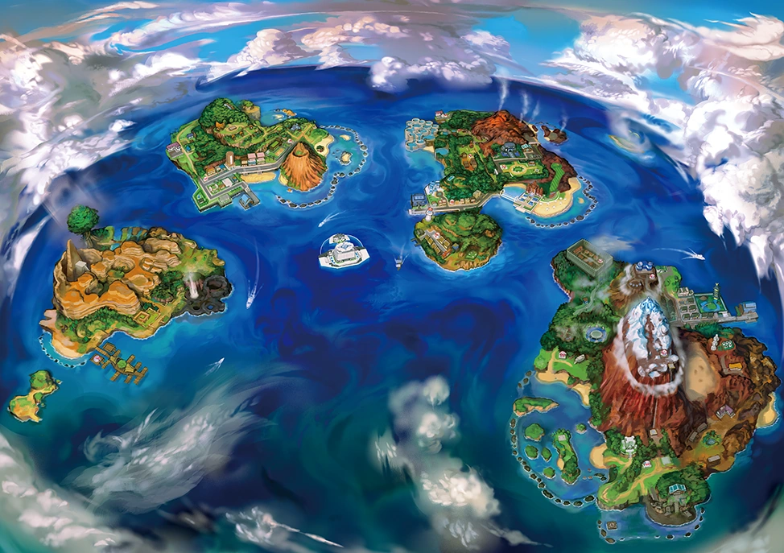

Generation 1
Kanto Region
The Kanto region is the first region in the Pokémon universe. It was introduced in the first generation know as Generation 1 with the games Pokemon Red & Blue. Also a little later with Pokemon Yellow for the original Gameboy console. A while later they also got remastered versions of them being Pokemon FireRed & LeafGreen for the Gameboy color console.
Kanto is modeled and named after the Kanto region of Japan, which includes, amongst other cities, the capital Tokyo, where Game Freak (The Pokemon Company) is headquartered.

Generation 2
Johto Region
The Johto region connected to the western part of Kanto. It was introduced in Generation 2 with the games Pokémon Gold & Silver, and Pokémon Crystal for the Gameboy color console. These games also got remastered versions being, Pokemon HeartGold & SoulSilver. Johto is mainly based on Western Japan, especially the Kansai region of Japan, with some elements of Chūbu and Shikoku.
Generation 3
Hoenn Region
The Hoenn region is based on the island of Kyūshū region in Japan and lies to the southwest of Kanto and Johto in the Pokémon world. It is the first of the two Sea Regions, the other being Alola. It was introduced in Generation 3 with the games Pokemon Ruby & Sapphire followed later with Pokemon Emerald. These games also got remastered versions Omega Ruby & Alpha Sapphire.


Generation 4
Sinnoh Region
The Sinnoh region is based on the northernmost island of Japan, Hokkaido and was introduced in Generation 4 with the games Pokemon Diamond & Pearl followed with Pokemon Platinum which were the first games to appear on the Nintendo DS. These games also got remastered versions with Pokemon Shining Pearl & Brilliant Diamond.
Generation 5
Unova Region
The Unova region is the first to be based outside of Japan. It is based on an area that spans two U.S. states: New York and New Jersey. This land is distant from all other currently known regions and thus has different Pokémon. The Unova region was introduced in Generation 5 with the games Pokemon Black & White and two years later with the additional games Pokemon Black 2 & White 2.


Generation 6
Kalos Region
Like the Unova region, Kalos is also based outside of Japan. The Kalos region is heavily inspired by France. The Kalos region was introduced in Generation 6 with the games Pokemon X & Y which were the first pokemon games to appear for the Nintendo 3DS.
Generation 7
Alola Region
The Alola region is the second sea region outside of Hoenn and it is based on the islands of Hawaii. The Alola region was introduced in Generation 7 with the games Pokemon Sun & Moon and later additional games being Ultra Sun & Ultra Moon.

Generation 8
Galar Region
The Galar region is based on Great Britain and was introduced in Generation 8 with the games Pokemon Sword & Shield which were the first pokemon games to appear for the Nintendo Switch console. These games were also the first to have an open world to explore instead of the traditional route you had to follow from one place to another.
Generation 9
Paldea Region
The Paldea region is based in the country of Spain and was introduced in Generation 9 with the games Pokemon Scarlet & Violet. These games kept the open world design and improved it from the previous games, giving the player a much more immersive experience while playing.